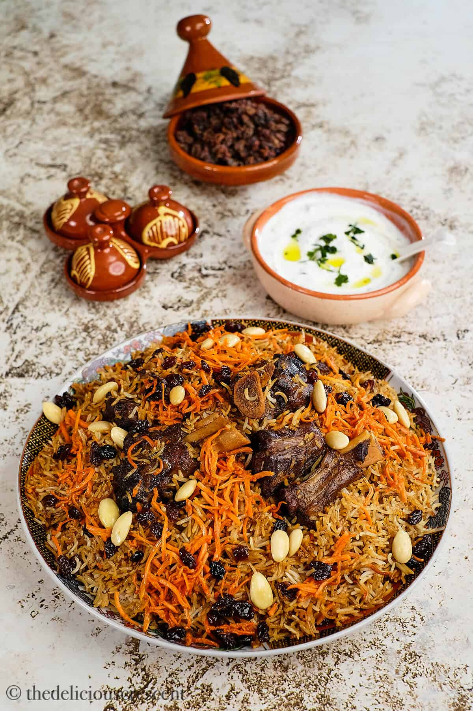
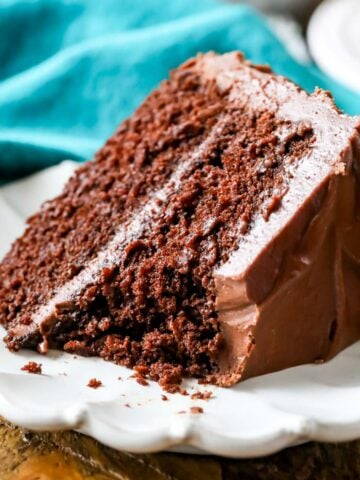

Kabuli Puloa
Ingredients
Broth:
- 1 onion, peeled and halved
- 1 whole head garlic, loose skins removed
- 1 cinnamon stick
- 4 cardamom pods, crushed
- 1 teaspoon ground black pepper
- 1 teaspoon cumin seed
- 1 teaspoon salt
- 1 teaspoon white sugar
- 1 teaspoon paprika
- 1 teaspoon coriander seeds
- 4 whole cloves
- 3 ½ cups water, or as needed to cover
Rice:
- 2 cups sella basmati rice
- tablespoon canola oil
- 1 onion, chopped
- 3 cloves garlic, minced
- 1 cup matchstick carrots
- ½ cup raisins
- ½ cup slivered almonds
- 1 teaspoon cumin seed
- 1 teaspoon ground black pepper
- 1 cardamom pod, shell removed and seeds crushed into a powder
- 1 whole clove
Instractions:
step 1:
- Make the broth: Place halved onion, garlic head, cinnamon stick, cardamom pods, pepper, cumin seed, salt, sugar, paprika, coriander seeds, and cloves into a pressure cooker. Pour in water to cover.
step 2:
- Close the cooker securely and place the pressure regulator over the vent according to manufacturer's instructions. Set to high and heat until steam escapes in a steady flow and makes a whistling sound, about 5 minutes. Reduce to medium and cook for 20 minutes. Let the pressure release naturally, about 10 minutes. Unlock the lid and remove
step 3:
- When the broth is almost finished, start the rice: Soak rice in cool water for 5 minutes, then rinse until water runs clear.
step 4:
- train cooled broth into a bowl. Clean out the pressure cooker, then place over medium heat and add oil.
step 5:
- Add onion and garlic to the cooker; cook and stir until softened and browned, 7 to 10 minutes. Stir in carrots and cook until soft, about 3 minutes more. Add strained rice, raisins, almonds, cumin seed, pepper, cardamom powder, and clove. Stir to combine, then pour in enough broth to cover.
step 6:
- Close the cooker securely and seal the vent; set to high and heat until the first whistle, 5 to 7 minutes. Reduce to medium and cook for 5 minutes. Remove from the heat and let rest for 7 minutes, then let pressure release naturally, about 10 minutes. Immediately transfer cooked rice to a serving dish to prevent

Firni Recipe
Ingredients
- 3 cups milk
- 3tbs corn starch
- 13/4 cup sugar
- 1/4 tsp cardamom
- 3-4 saffron threads soaked in 1tblsp hot water
- 1/4 tsp salt
- 2 tsp rose water
- Pistachios for garnish
Instractions:
step 1:
- Mix the corn starch into 1 cup of folded milk until lump-free.
step 2:
- Heat 2 cups milk with the sugar on medium heat and stir until sugar dissolves and tiny bubbles form around the edge of the pan. Stir continuously to prevent it from sticking or burning.
step 3:
- Next,add the corn starch slurry. Stir constantly on medium-low heat until the mixture thickens. Make sure you scrape the bottom to prevent it from sticking or burning.
step 4:
- After that, add the salt, cardamom, saffron, and rose water.
step 5:
- The mixture is done when it coats the back of the spoon and doesn’t runoff. Take your finger and draw a line down the back of the spoon. If the custard doesn’t run, it’s done.
step 6:
- CNext, pour the custard into a dish and cover with plastic wrap. Ensure the plastic touches the custard to prevent a film from forming on the top. Let cool until firm.
step 7:
- Top with pistachios and serve.

Recipe of the Cake
Ingredients
- 1 ⅔ cup (208 g) all-purpose flour
- 1 cup (200 g) light brown sugar
- 1 cup (200 g) granulated sugar
- ¾ cup (75 g) natural cocoa powder
- 1 ½ teaspoons baking soda
- ¾ teaspoon salt
- ½ cup (113 g) unsalted butter melted
- ½ cup (118 ml) neutral cooking oil
- 2 large eggs
- 2 teaspoons vanilla extract
- 1 cup (236 ml) buttermilk
- ½ cup (118 ml) hot coffee or hot water
Instractions:
step 1:
- Preheat oven to 350F (175C) and prepare two 8" round cake pans by lining the bottoms with parchment paper and lightly greasing and flouring the sides. Set aside.
step 2:
- In a large mixing bowl (or the bowl of a stand mixer fitted with the paddle attachment) stir together flour, sugars, cocoa powder, baking soda, and salt until well combined
step 3:
- Add melted butter and oil, stir well. Batter may be thick, this is fine, just stir until all of the dry ingredients are moistened.
step 4:
- Add eggs, egg yolk, and vanilla extract and stir until well combined. Pause occasionally to scrape sides and bottom of bowl.
step 5:
- Gradually add buttermilk and stir well.
step 6:
- Add hot coffee or water, stirring carefully until ingredients are well-combined
step 7:
- Evenly divide batter between prepared pans. Transfer to center rack of 350F (175C) and bake for 35-40 minutes or until a toothpick inserted in center comes out clean or with moist crumbs.
step 8:
- Allow to cool for 15 minutes before inverting onto cooling rack to cool completely before frosting.
